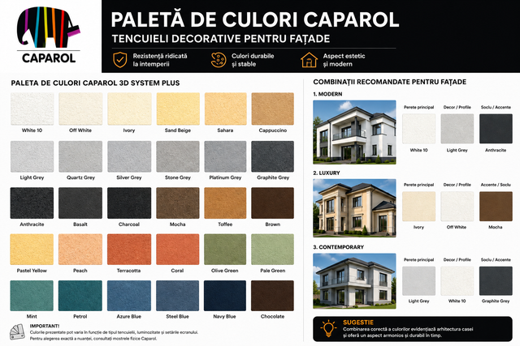

📅 15 Iunie 2026 | ⏱️ 5 minute | 📍 Chișinău, Bălți, Cahul | ✍️ Valmex.md
Culoarea fațadei este prima impresie pe care o lasă casa ta. Spre deosebire de o pictură de interior, o greșeală la exterior se vede de la stradă, în fiecare zi, ani la rând. Iată cum să alegi o culoare care să rămână frumoasă pe termen lung.
O casă modernă, cu linii drepte, acceptă bine culori neutre — gri, alb, antracit — eventual combinate cu un accent de lemn sau negru mat. O casă cu arhitectură clasică se potrivește mai bine cu tonuri calde (crem, bej, teracotă). Fațada ar trebui să completeze stilul, nu să-l contrazică.

Culorile foarte intense sau „la modă" pot obosi vizual mai rapid decât tonurile neutre. Tencuiala decorativă siliconată rezistă ani buni fără decolorare, deci merită ales un ton care îți place cu adevărat, nu doar unul trendy momentan.
O culoare poate părea complet diferită în funcție de orientarea casei și de lumina soarelui. Recomandăm întotdeauna un mostră fizică, văzută pe fațadă la diferite ore din zi (dimineață, amiază, apus), înainte de decizia finală.
O fațadă echilibrată folosește de regulă o culoare principală (pentru suprafața mare), un ton secundar (pentru soclu sau detalii arhitecturale) și, opțional, un accent (tocuri de ferestre, uși). Mai mult de 3 tonuri riscă să creeze dezordine vizuală.
Dacă nu ești sigur, alege o culoare neutră pentru suprafața mare a fațadei și experimentează cu accente (uși, tocuri, elemente decorative) — acestea sunt mult mai ușor și ieftin de schimbat ulterior decât întreaga fațadă.
Culoarea potrivită pentru fațadă echilibrează stilul arhitectural, gusturile personale și durabilitatea în timp. Echipa Valmex.md te poate ajuta cu mostre reale de tencuială decorativă și recomandări personalizate pentru casa ta, din paleta de culori disponibile.
Echipa Valmex.md oferă consultație gratuită și mostre de tencuială decorativă pentru fațada casei tale, în toată Republica Moldova.
📞 Sună Acum: +373 78 026 212Sau trimite cerere online — răspundem în 30 de minute